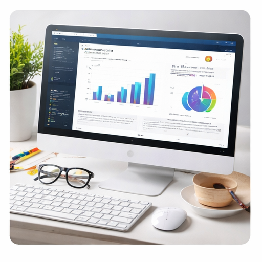

Portfolio website
Dit project is een persoonlijke portfolio-website die ik heb ontworpen en opgebouwd met HTML5, CSS3 en Bootstrap. Het doel van deze website is om mijn profiel, vaardigheden en projecten op een overzichtelijke en professionele manier te tonen.

Over dit project
Tijdens dit project heb ik gewerkt aan een responsieve layout met een duidelijke navigatie, een homepagina, een portfolio-overzicht, een detailpagina en een contactpagina.
Ik heb gebruikgemaakt van Bootstrap om de website correct weer te geven op desktop, tablet en mobiel. Daarnaast heb ik eigen CSS gebruikt om de website een moderne en persoonlijke stijl te geven.
Belangrijkste onderdelen
- Opbouwen van een persoonlijke portfolio-website met meerdere pagina’s.
- Gebruik van een duidelijke navigatie tussen home, portfolio, projecten en contact.
- Responsive layout maken met Bootstrap breakpoints.
- Afbeeldingen, bronvermeldingen en een contactformulier toevoegen.
Gebruikte tools
HTML5, CSS3, Bootstrap en GitHub fonts.
Doel van het project
Het doel van dit project was om een nette, gebruiksvriendelijke en responsieve website te maken die mijn werk en profiel op een duidelijke manier presenteert.
Wat heb ik geleerd?
- Ik heb geleerd hoe ik HTML5-elementen correct kan gebruiken.
- Ik heb geleerd hoe ik Bootstrap kan gebruiken om pagina’s responsive te maken.
- Ik heb geleerd hoe ik een duidelijke mappenstructuur kan opbouwen.
- Ik heb geleerd hoe ik mijn website online kan plaatsen via GitHub en Netlify.
Projectoverzicht
| Onderdeel | Beschrijving |
|---|---|
| Type project | Persoonlijke portfolio-website |
| Hoofdtools | HTML, CSS en Bootstrap |
| Focus | Responsive design, structuur en presentatie |
| Resultaat | Een online portfolio met projecten, contactpagina en projectdetailpagina’s |